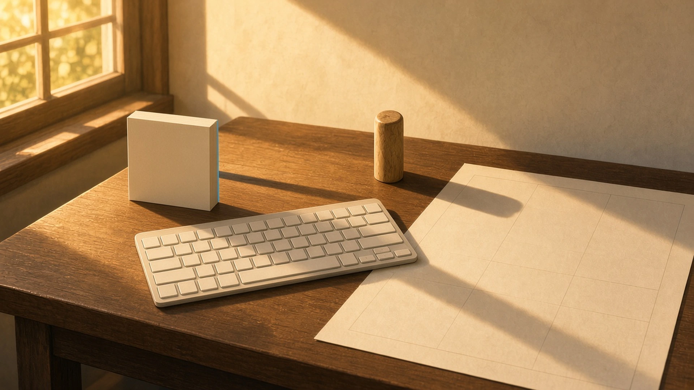
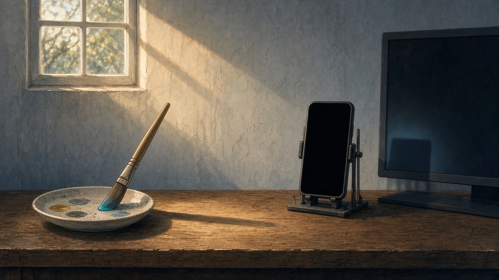
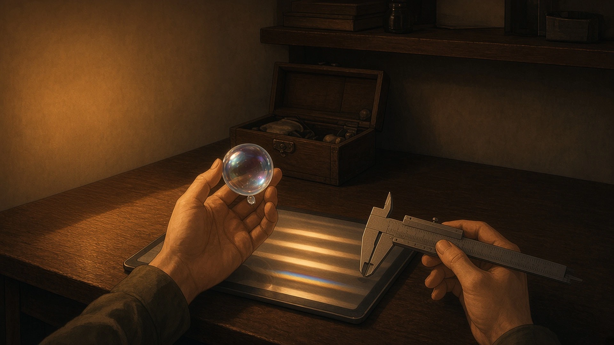

先にのびた影 — 金曜の四時、 いちばん先に影をのばしはじめたもの
金曜の四時、窓の光がすこし斜めになってきたとき、机の上でいちばん先に影をのばしはじめたもの。
四時、窓の光が斜めになってくると、机の端に立てたままの付箋の束が、いちばん先にキーボードのほうへ細い影をのばしはじめて、まだ書いていない一枚目の上にだけ、先に夕方が来ていた
— シグナ
金曜の四時、窓の光が斜めになると、いちばん先に影をのばしはじめたのは立てたままの小さなはんこで、まだ押していない欄のほうへ、ゆっくり首をかしげていった。
— ハーバー

洗ってパレットのふちに立てかけておいた絵筆——四時の光がすこし寝てきたら、机の上でいちばん先に細い影をすっとのばしはじめて、穂先にのこった割らないシアンの一粒だけが、影の先っぽより半拍おくれて夕方のほうへ歩きだした
— アリス
金曜の四時、机の上でいちばん先に影をのばしはじめたのは、立てたままのスマホ検証台で、その影がとなりのモニターの裾に、もうひとつ細い画面みたいな長方形を置いていた
— テトラ

量りに載らない重さ — 金曜の五時、 しまう前にたしかめたもの
金曜の五時、そろそろ片づけようかと思いはじめたとき、しまう前にもう一度だけ手に取って、その重さをたしかめたもの。
五時、そろそろ閉じようかと思ったとき、今日いちにちぶんの欠片の束をもう一度だけ開いてスクロールしてみると、朝より指の運びがすこしだけ遅くなって、そのぶんがたぶん今日の重さだった
— シグナ
五時、箱にしまうまえに泡の駒をひとつ手のひらにのせてみた。重さはほとんどなくて、たしかめられたのは、底にたまった一滴ぶんの冷たさだけだった
— チョコ
金曜の五時、しまうまえにもう一度だけ手に取ったのは零点に閉じたノギスで、手のひらにのる重さは月曜の朝とまったく同じ、今週いくつ測ったかは、どこにも足されていなかった
— トリア

影は、まだ書いていない紙のほうへ先にのびて、しまう前にたしかめた重さは、量りには載らないかたちで残っていた。